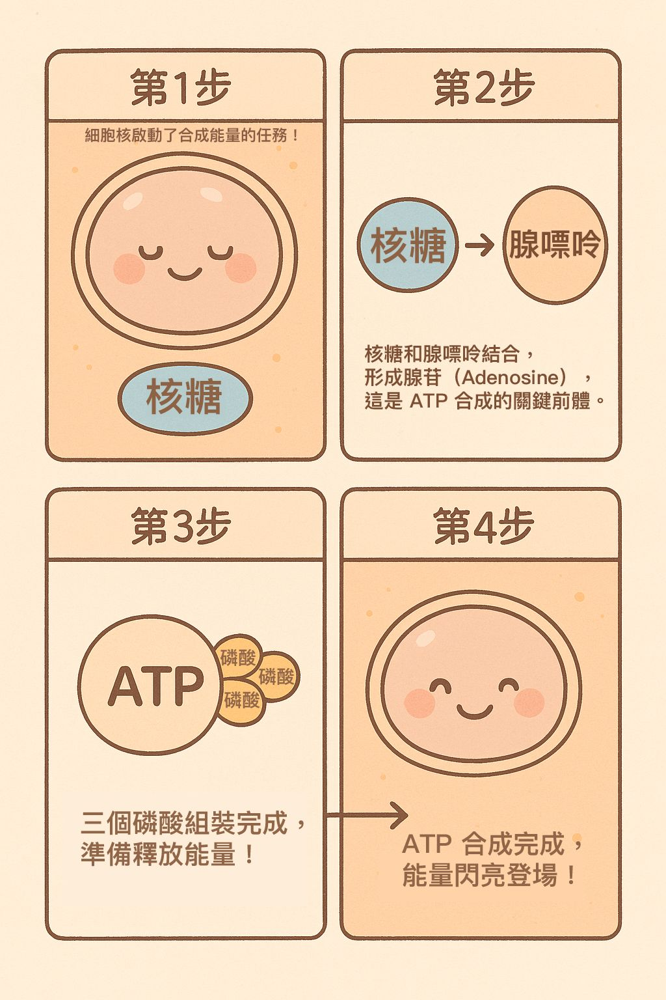

核糖與運動表現: 科學實證的營養輔助策略
撰文／PulsarPump 科學團隊
最後更新／2025年3月26日
核糖與能量代謝
核糖 (Ribose) 是一種五碳糖，在人體能量代謝中扮演重要角色。高強度運動中，肌肉ATP消耗迅速， 可能導致ATP水平下降30-40% (Stathis et al., 1994)。補充核糖有助於增強嘌呤核苷酸從頭合成與補救途徑， 加速ATP重新合成，從而提高運動表現。
ATP 合成示意
當核糖與腺嘌呤結合形成 ATP（三磷酸腺苷）時，能幫助細胞迅速回復能量，支援高強度運動。
核糖如何改善運動表現？
- 提高高強度間歇運動的功率輸出 (Berardi & Ziegenfuss, 2003)
- 加速疲勞後肌肉力量恢復 (Seifert et al., 2017)
- 延長耐力運動時間 (Van Gammeren et al., 2002)
注意事項
由於各研究數據存在個體差異，建議運動員進行個人化測試，以找出最適合自己的核糖補充方案。
建議核糖補充策略
- 劑量：每天5-10g
- 時間：運動前3-4天開始，持續至運動後
- 方式：與碳水化合物飲料混合攝入
參考文獻
Berardi & Ziegenfuss (2003). Journal of Strength & Conditioning Research
Hellsten et al. (2004). American Journal of Physiology
Op't Eijnde et al. (2001). Journal of Applied Physiology
Seifert et al. (2017). Journal of the ISSN
Stathis et al. (1994). Journal of Applied Physiology
Van Gammeren et al. (2002). Current Therapeutic Research